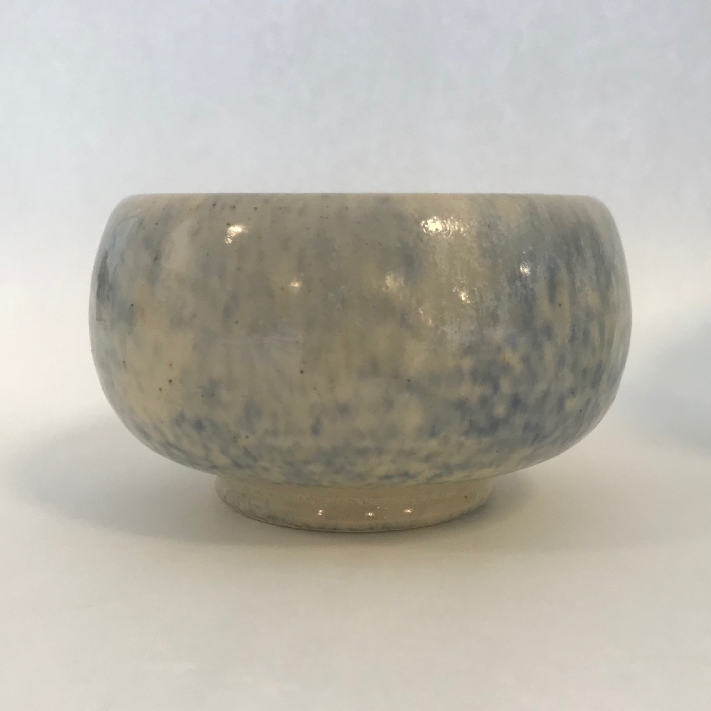
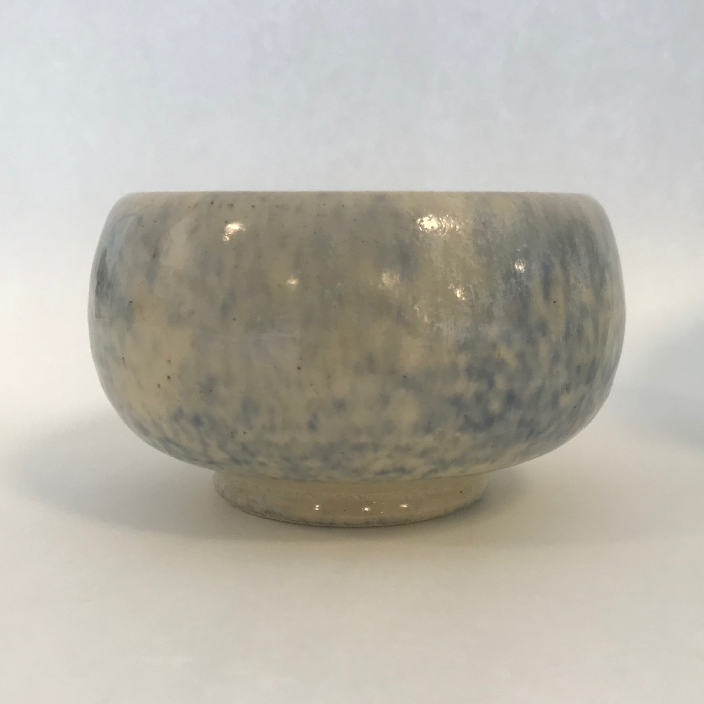
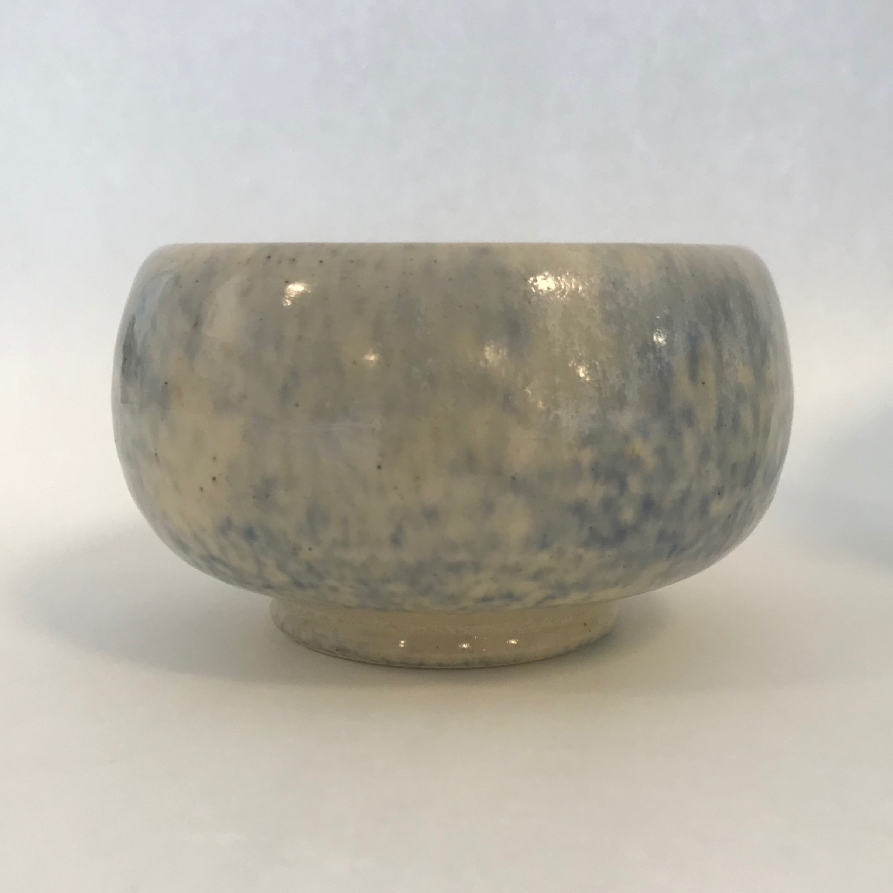

I started wheel throwing in spring 2017 and loved it. The first wheel class I took was primarily an art class that used the wheel and the second class was a functional pottery class.
It took me a long time to remember and internalize how much the clay shrinks from throwing to glaze fire. When the bag says the clay will shring 10% it doesn't sound like very much. But, losing 10% of the height is a significant amount of volume loss. I am approximating the volume of a mug as the volume of a cyliner to estimate/plan mug volumes.
